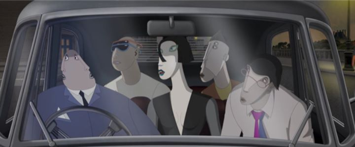

I was cautiously looking forward to the 2018 film "Ruben Brandt; Collector," when it received a limited theatrical release by Sony Pictures Classics. The promotional materials made it clear what the selling point was, which would make or break the movie for audiences: it had a very unique graphical style. The characters all look like they walked out of a modern cubism painting, or something by Picasso. They have grey skin, long faces, snouts for noses. Some of them have misplaced eyes, or multiple eyes, or multiple faces. In some parts of the movie, these unique traits are literal characteristics that define a character; one person is a flat "2D" person in this 2D-animated feature, which allows him limited ability to slide under doors and other tight areas (and also allows a great joke about his parents).But like most animated films that strive for a unique aesthetic, to judge the appeal of the style purely by posters, screenshots or edited trailers does it a disservice. "Ruben Brandt" is a love letter to paintings, and in a way, to animation. In its many action scenes, it blends hybrid 2D and 3D animation (typically, 3D is only used for backgrounds and inanimate objects, the way it should be, for dynamic camera shots). While mostly sticking to that cubism style, it occasionally deviates for different characters, or for nightmarish dream sequences. If you consider yourself an art expert, you'll be able to pause and recognize dozens of Easter eggs in the background or foreground, most of which are inspired by real works of art. Indeed, regularly pausing the movie would produce hundreds of gallery-worthy images. Whether or not it is visually "appealing" to a mass audience is a different matter, but the dedication to the style and its depth should be applauded.The animation is also very good... most of the time. The main characters are animated smoothly and with consistency. However, many background characters, which the camera will pause on often for a visual gag, are animated stiffly, sometimes like a mannequin or even as a static image moving across the screen. And 3D objects like cars, with 2D characters driving them? No attempt is made to blend the two styles, and while I personally like it, I imagine others might complain. The intent is clear: the world of "Ruben Brandt" is meant to be a painting itself, a homage to the medium, even if the story doesn't call for such an extreme. However, choosing a more consistent style, or at least putting these styles of motion in different contexts (for example, letting loose in dream sequences but staying grounded during reality) would have made the production a bit more impactful.Action-thriller is a rare genre for an animated film, but that's exactly what "Ruben Brandt" is. The titular Ruben is a famous psycologist, typically treating "artistic minds," and using art itself as a thearapy. In creating art, his patients are able to "possess their fears, to overcome them." But Ruben himself is haunted by nightmares... curiously, all of them are based around famous paintings. It just so happens that some of Ruben's patients are talented thieves, and when they find out about his issue, they go so far as to steal one of the paintings that torments him. Ruben is thankful, and proceeds to lead the group to steal a total of 12 that prevent him from sleeping at night. Meanwhile, a dedicated detective is hot on their trail, and a subplot that explains WHY Ruben is suffering from these nightmares comes to light.  This plot starts off well enough, making it clear that this is an adult caper. Ruben's visions truly are scary and violent, enough to earn an R-rating. Some abstract-nudity and smooth sex puns also make clear how cool (and again, adult) the movie is. But in the adventure to steal a dozen paintings, most of the quests blend as a montage, losing some of the urgency, something that might have been solved had this been a television series instead of a single feature. Worse off is the ending. It feels like an entire third act is missing: major revalations are made, but not acted upon. And though Ruben does end up with the paintings... are we to assume he will live out the rest of his life gazing at his new private collection, not fully understanding his own madness, while the rest of the world wonders what became of these famous works? Perhaps it was an issue of time or money, or a case of writer's block that made a solid ending difficult to write. Maybe a sequel film or book would give some closure. It's a shame that the clever concept, good writing and direction can't be fully appreciated without that ending.Audio design is generally strong. The musical score is well-conceived. The acting is natively provided in English, and the cast does a great job selling the characters."Ruben Brandt; Collector" far exceeding my expectations in many ways, being a much more visually and narratively ambitious and fun movie than I imagined. It also let me down more than I thought it would in those elements. Cool and innovative style alone isn't enough, but if it was, this movie would win all the awards. And that by itself should at least mean the movie is worth your attention, flaws or no.
- "Ani" More reviews can be found at : https://2danicritic.github.io/ Previous review: review_Romeo_x_Juliet Next review: review_Saga_of_Tanya_the_Evil